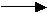
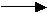

The water molecules in ice Ih are surrounded by four randomly directed hydrogen bonds. Such arrangements change to an ordered (regular) arrangement of hydrogen bonds at low temperatures, so long as localized proton hopping is sufficiently enabled, a process that eases with increased pressure [1084]. Ice-eleven (ice XI) is the low-temperature equilibrium structure of hexagonal ice prepared from dilute KOH (10 mM, about one molecule to every 5000 molecules of water) solution kept just below 72 K (at ambient pressure; D2O 76 K) for about a week [207]. a The low temperature of this transition has been correlated with the low energy difference between the most and the second most stable ice configurations [1655]. Ice XI can also be produced from a thin film (20 nm) of pure solute-free cubic ice (Ic) under electron beam irradiation [1924].
Ice XI
The hydroxide ions create defects in the hexagonal ice allowing protons to jump more freely between the oxygen atoms (and so this structure of ice XI breaks the 'ice rules'). The ions may also compensate for the large net dipole moment of the crystal lattice along the c-axis. A loss of entropy by proton ordering occurs to give a more stable structure (that is, about one-sixth lower internal energy). The K+ ions occupy interstitial sites in the hexagonal boxes, but neither ion is shown in the structures given. Ice-eleven is the thermodynamically favored form of ice at atmospheric pressure at these low temperatures. It is a proton-ordered hexagonal ice forming orthorhombic crystals (Space group Cmc21, 36; symmetry C2v Laue class symmetry mmm). The unit cell has dimensions a = 4.5019, b = 7.7978 c = 7.3280 (90º, 90º, 90º, 8 molecules) and is shown opposite [388]. Two oxygen (1:2 50:50) and three hydrogen positions (1:2:3 25:25:50) are nonequivalent (see labels opposite. Although oriented bonds parallel to the c-axis should give a ferroelectric character (that is, they have a net dipole), ice XI is now thought to be antiferroelectric (with zero net dipole) in nature [2243], but containing small oppositely polarized domains. This is due to the large energy required to create large single crystals. The opposite orientation, of both molecules and dipoles, of alternating layers in the a-b planes ,gives rise to small (≈ 2%) relative displacements (middle layer to the right, opposite). A fully ordered crystal has yet to be found.
There are distinct differences in the Raman spectra between ices 1h and XI, with ice XI showing much stronger peaks in the translational (≈ 230 cm−1), librational (≈ 630 cm−1), and in-phase asymmetric stretch (≈ 3200 cm−1) regions [1234].
As ice XI is thought to have the most stable
conformation of ice Ih, but the transformation from ice Ih
may be very slow, its structure has been sought and found,
in ancient Antarctic ice 102 - 104 years old [798] b and in other pure water samples [1636].
This study [798] indicated the transformation temperature (ice XI  ice Ih) is -36ºC,
which is far higher than the expected but unobtainable, triple
point (with hexagonal ice and water vapor) of KOH-catalyzed
ice-eleven (≈ 0 Pa, 71.6 K). However, more recent work indicates that the transformation ice Ih  ice XI occurs at 58.9 K while the reverse transformation ice XI ice Ih occurs at 73.4 K [2300]. Ice Ih that has once transformed to ice XI and back to ice Ih, on raising the temperature, retains some hydrogen-ordered domains and more easily transforms back to ice XI [1629]. The transformation to ferroelectric structuring within crystalline ice films is allowed as the ice rules are easily broken at hetero-interfaces due to symmetry breaking, where the first-layer water molecules are in firmly pinned configurations. Such proton ordering within icy films is thermodynamically stable up to ≈ 175 K suggesting ferroelectric ice is widely distributed in space and the polar stratosphere [2866].
ice Ih) is -36ºC,
which is far higher than the expected but unobtainable, triple
point (with hexagonal ice and water vapor) of KOH-catalyzed
ice-eleven (≈ 0 Pa, 71.6 K). However, more recent work indicates that the transformation ice Ih  ice XI occurs at 58.9 K while the reverse transformation ice XI ice Ih occurs at 73.4 K [2300]. Ice Ih that has once transformed to ice XI and back to ice Ih, on raising the temperature, retains some hydrogen-ordered domains and more easily transforms back to ice XI [1629]. The transformation to ferroelectric structuring within crystalline ice films is allowed as the ice rules are easily broken at hetero-interfaces due to symmetry breaking, where the first-layer water molecules are in firmly pinned configurations. Such proton ordering within icy films is thermodynamically stable up to ≈ 175 K suggesting ferroelectric ice is widely distributed in space and the polar stratosphere [2866].
Ice XI has triple points with hexagonal ice and gaseous water (72 K, ≈ 0 Pa) and hexagonal ice and ice II (73.4 K, 70 MPa) [2300].
It was proposed that there may be a proton-ordered form of cubic ice (called ice XIc) [1753], and evidence for this is accumulating [2146].
Interactive structures of ice-eleven (Jmol) are available.
a Doping with KOH does not seem to allow the formation of the other ordered phases ice-thirteen, ice-fourteen, and ice-fifteen (from ice-five, ice-twelve, and ice-six, respectively) where only dilute hydrochloric acid doping seems effective. [Back]
b Other studies did not find evidence of proton ordering [2860]. [Back]
Home | Site Index | Phase Diagram | Ices, introduction | Ice-Ih | Ice-Ic | Ice-Isd | II | III | IV | V | VI | VII | VIII | IX | X | XII | XIII | XIV | XV | XVI| XVII | XVIII | Amorphous ice | LSBU | Top
This page was established in 2003 and last updated by Martin Chaplin on 4 October, 2021